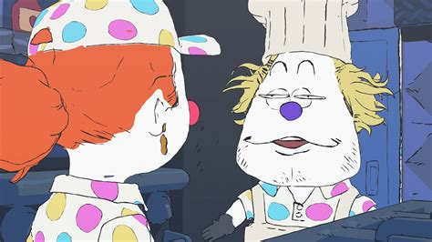

Now to tell you about the show that me and my friends are going to dress up as for halloween
BigTop Burger

Image of Penny talking to Tom (steve)
"The surreal daily lives of the employees of the bigtop burger food truck." - IMDb
Bigtop Burger is an animated short series made by Ian Worthington (worthikids) on youtube. It follows a clown-themed food truck named bigtop burger which is owned by steve, an actual clown.
"While Steve's actions are more harmlessly strange than horrifying, it still applies, as the other workers have very muted reactions to him. Even Billie, who seems more reactive, doesn't get too worked up."[1]
They are very silly and I really like the side characters
Is this... normal food truck stuff?" -billie
Rival food truck
Their rival food truck (who also sells burger) is called Zomburger. Just like bigtop burger, the owner, Cesare (pronouned Chess-a-ray) is a real life zombie.
"To Bigtop Burger. While the workers of Bigtop are a little silly, they're rather passive, harmless workers trying to do their job, with their boss being the only one who's truly bizarre. Cesare is a weird person, but rather than acting as contrast, the Zomburger employees actively go along with what he says and go out of their way to attack the competition. Even their chugging guitar theme is named "DOWN" on the soundtrack album - and its lyrics are decidedly less open to debate than those of UP..." [1]
I think Cesare is the most interesting out of all of them just because of the most random things he says at all times.
Why we chose bigtop to dress up for halloween
My friends introduced me to the show, and later on we got the rest of our friend group to watch it. The friend who introduced it to me has never cosplayed before, so we decied it would be a good first cosplay for them because it's just dressing up as a clown. Plus the show is very silly which makes it easier to do whatever you want instead of people telling you off for not being in character.
I think it might fit with our personalities just because we act like clowns so often. There is barely any serious bones in our bodies. We're like a posse,,,a clown posse (I think that references somthing but I have no clue)
I would recommend you watch it if you can. It's around 25 minutes maximum for both seasons.
Who I will be for halloween
Billie from Bigtop Burger
Bigtop Burger's newest recruit, Billie is not quite used to the strangeness of the job as Penny or Tim are.
The reason for me being billie for halloween is because all my friends already chose everyone from the bigtop crew. Which is good for me because I couldn't choose. I like to dress up as characters that I relate to a lot but in bigtop, they were all silly so I couldn't make up my mind.
Though I do not think I have what it takes to be billie just because I have too much energy. Billy is a very low energy character and I have too much. Think of it like a tired teenager vs. an energetic 10 year old except both of us are adults. I'm an introvert so I guess that's something we have in common.